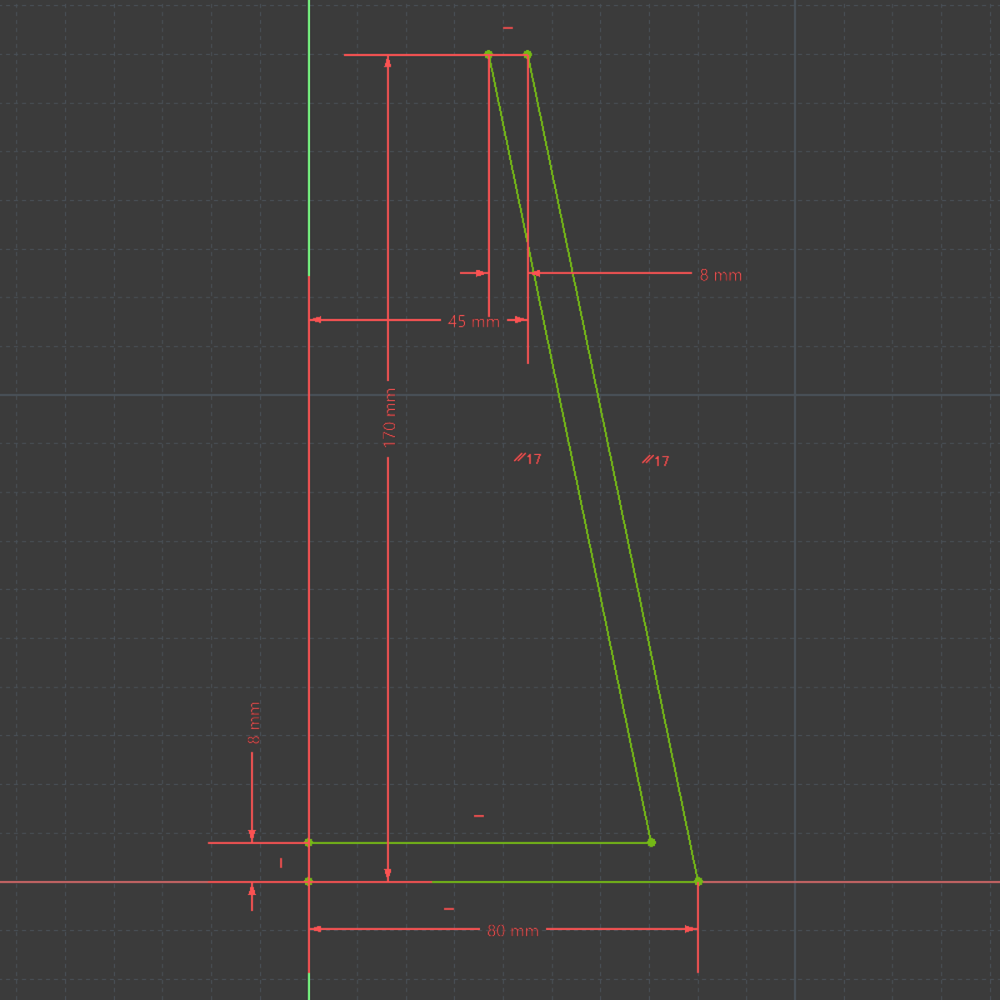
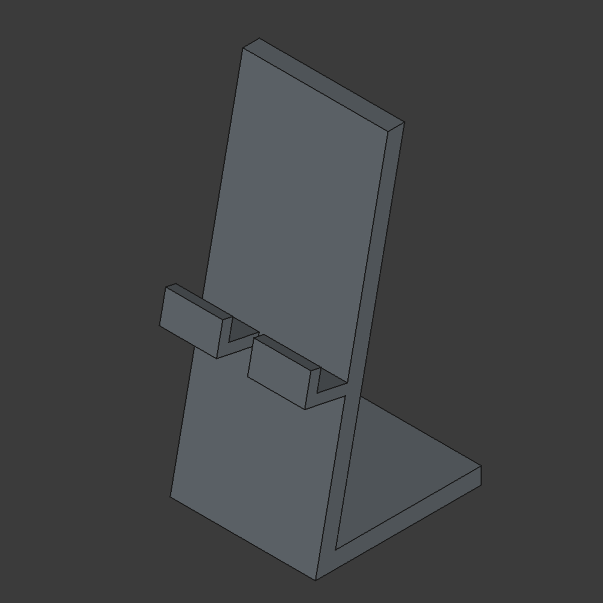
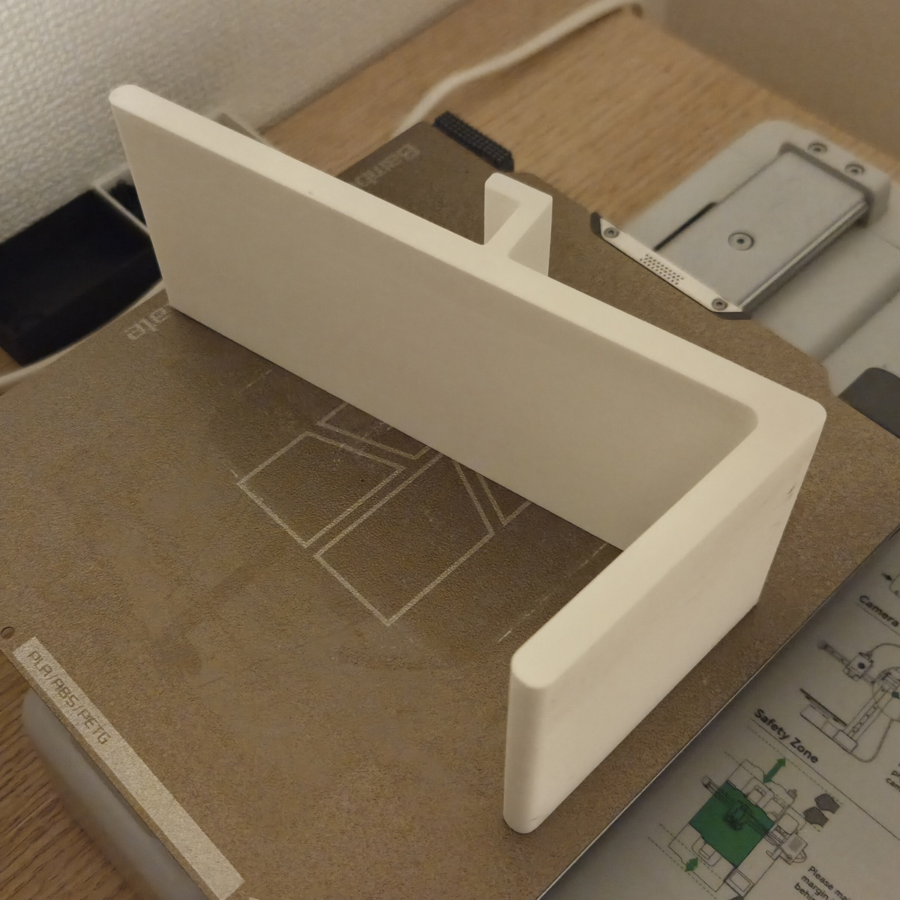

製品ができるまで
設計
大まかな構想を決め、パソコンで設計を始めます。
この段階ではまだ発売できる製品にはなりません。

校閲
プロトタイプ(試作品)を作り終えたらそれを一度見直します。
このようにすることで今まで気づけなかった問題点
⸺例えば角がとがっている、壊れやすい部分があるなどの点を解決することができます。

印刷
ここで一度印刷を行います。
長いものだと印刷に一日以上時間がかかることもあります。
3Dプリンタの印刷はただ単に印刷をするだけではありません。
印刷の速度、フィラメント(材料となるプラスチック)の種類、温度、すべてが影響し、失敗することも多々あります。
できるだけ高クオリティなものを低コストで作れるように設定を行います。
